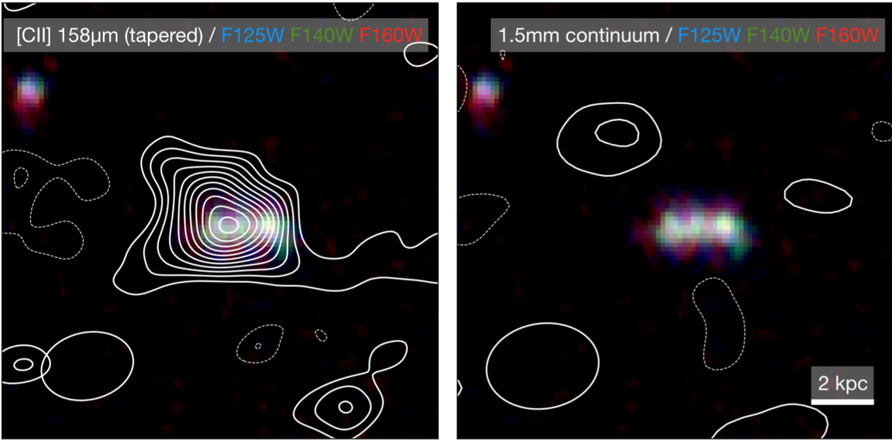
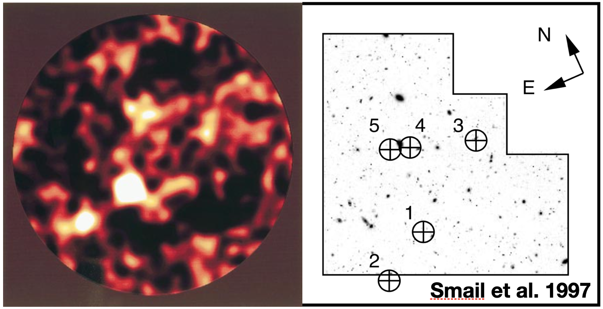
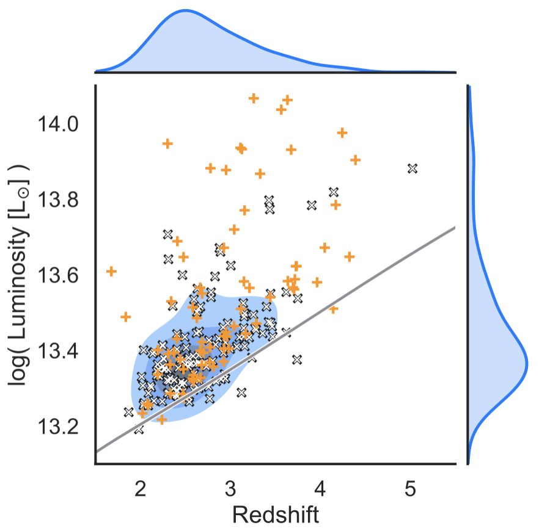

Current Work
Understanding dust-obscured star-formation from high to very high redshift.
A quick primer: Galaxy Formation in a nutshell
Setting the stage
 Boom! The big bang started both the existence of space and time of our Universe, together with an incomprehensible amount of energy. Through several extremely interesting processes, this energy expanded with the Universe, cooled, and condensed into matter. This distribution of matter mere seconds after the Big Bang formed the 'nucleation sites' for the formation of galaxies. The imprint of this distribution can still today be seen in the Cosmic Microwave Background Radiation in the light that was emitted when the Universe suddenly became transparent. Since this moment, the Universe expanded about 1300-fold, elongating the light from the optical colours into the mm-domain, a so-called redshift, z, of 1300. After this period, the cosmic dark ages started: Nothing but slowly-cooling neutral Hydrogen and Helium (and trace other elements) slowly collapsing...
Boom! The big bang started both the existence of space and time of our Universe, together with an incomprehensible amount of energy. Through several extremely interesting processes, this energy expanded with the Universe, cooled, and condensed into matter. This distribution of matter mere seconds after the Big Bang formed the 'nucleation sites' for the formation of galaxies. The imprint of this distribution can still today be seen in the Cosmic Microwave Background Radiation in the light that was emitted when the Universe suddenly became transparent. Since this moment, the Universe expanded about 1300-fold, elongating the light from the optical colours into the mm-domain, a so-called redshift, z, of 1300. After this period, the cosmic dark ages started: Nothing but slowly-cooling neutral Hydrogen and Helium (and trace other elements) slowly collapsing...
Forming the first stars
 Like a slow-going Sunday morning, at around a redshift of 30 to 15, collapsing clumps of gas awake the first stars in the Universe (some theories predict huge stars, a thousand times as massive as our sun). Whilst stars typically burn Hydrogen, it is important to note that they do require Carbon, Nitrogen and Oxygen to efficiently convert this into Helium (CNO-cycle). Single stars are too faint to spot out at these distances. We are, however, able to find galaxies out to redshifts ~8 to 10 using the Hubble Space Telescope, whose galactic environment is still very much influenced by this earlier period. On the left, we see one of these Hubble-detected galaxies, where we also detected the traces for Carbon and Oxygen (Bakx et al. 2020).
Messy, dusty business
 While we are able to (barely) detect dust at redshifts of 8 to 10, lower-redshift sources appear to have dust in excess. Initial observations on a Hawaiian telescope (JCMT) found moster galaxies, where the dust obscured so much star-formation, that models using super-computers are still unable to reproduce or explain them. What's worse, these sources remained often completely undetected in optical light, even from the first observation of sub-mm galaxies. Here Smail et al. 1997 finds five bright sub-mm (left) sources with no obvious galaxies visible in the optical colours (right). Until the late 2000s, research had come a long way in studying individual sources, detecting them by looking at dusty optical sources, or small scale surveys. What became obvious, is that star-formation occurred almost spontaneously throughout the galaxy, and that there was a suspicious lack of them in our local Universe.
Herschel Bright Sources
 In an effort to study galaxies such as these extreme monsters over large parts of the sky, the Herschel Space Telescope was launched in 2009. Part of its mission were two large area surveys that together cover around 1/30th of the sky. In my research, I've focussed on the brightest galaxies in the largest of these surveys, looking only at the furthest of these galaxies. We aptly named them the Herschel Bright Sources, i.e. HerBS: the topic of my PhD Thesis. Many of them are so bright, current models are struggling to explain their existance in the first place. Indeed, it is important to characterize these sources as best we can, to improve our models, and thus our understanding, of the Universe.